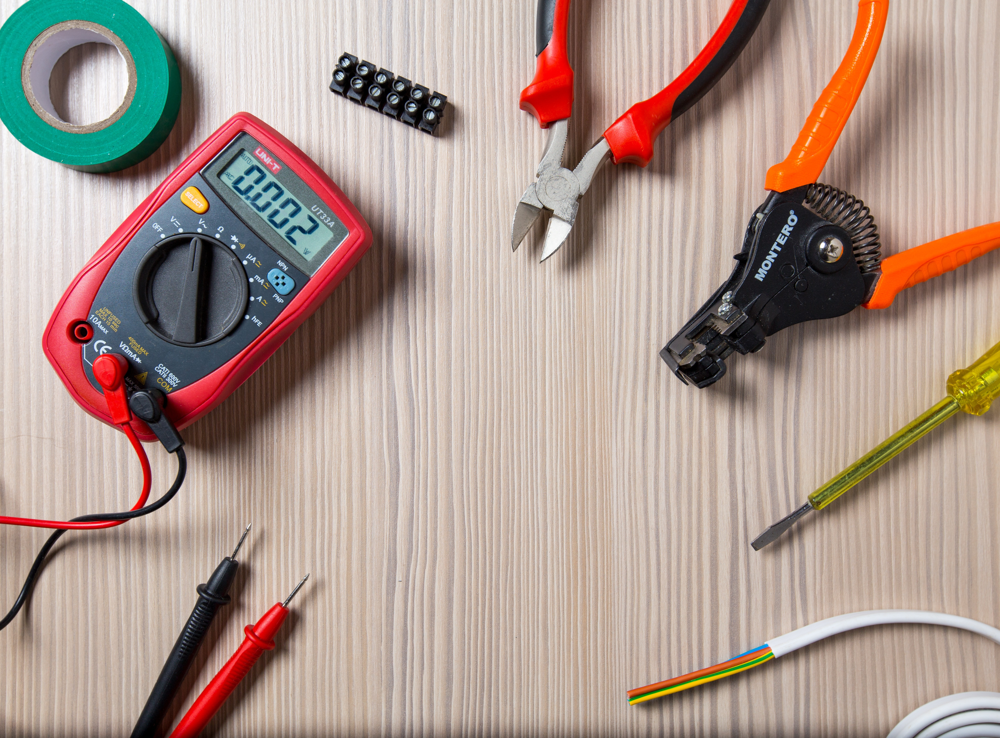

Reliable Service
We aim to provide a dependable service and practical solutions for your electrical needs.
Reliable Electrical Services

VLP Electricals Ltd provides electrical services for homes and businesses across Manchester and the surrounding areas.
Our services include electrical installations, repairs, fault finding, lighting, maintenance, rewiring and fuse board replacements.
We aim to provide a reliable and professional service, with clear communication and practical solutions for our customers.
Whether you need help with an electrical fault, an upgrade or a new installation, get in touch to discuss your requirements.
Contact UsWe aim to make finding reliable electrical services straightforward, with a focus on quality, communication and practical solutions.
We aim to provide a dependable service and practical solutions for your electrical needs.
From electrical installations and repairs to rewiring and fuse board replacements, we offer a range of electrical services.
We provide electrical services across Manchester and surrounding areas.
We aim to keep customers informed and explain the work needed before proceeding.
At VLP Electricals Ltd, safety is an important part of every electrical project. We understand the importance of safe and reliable electrical systems in homes and businesses.
We believe electrical work should be approached responsibly, with careful consideration of safety requirements and the needs of each customer.
We aim to provide clear information about the work required, discuss potential electrical concerns and help customers make informed decisions.
Our priority is to help customers address their electrical needs with safety and reliability in mind.
Contact Get in Touch